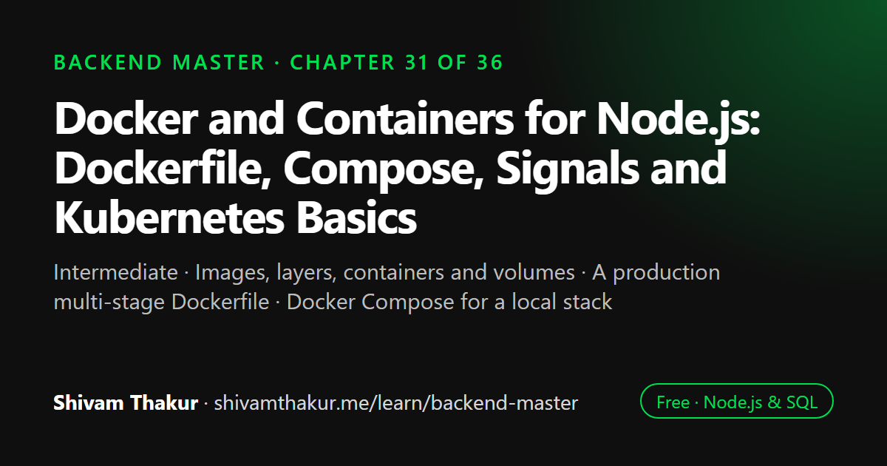

Chapter 31 of 36 · Intermediate
Docker and Containers for Node.js: Dockerfile, Compose, Signals and Kubernetes Basics
Docker and Containers — Packaging ShopLine So It Runs the Same Everywhere

A container packages your application with its runtime so it runs the same everywhere. This chapter explains what containers are, writes a production Dockerfile with multi-stage builds, a non-root user and tini, a Compose file for the local stack, signals and graceful shutdown, resource limits, security hardening and Kubernetes basics. The Dockerfiles and manifests were not run.
In this chapter you will learn
- Images, layers, containers and volumes
- A production multi-stage Dockerfile
- Docker Compose for a local stack
- PID 1, SIGTERM and graceful shutdown
- Container security and Kubernetes probes and rollouts
31.0 Why This Chapter Matters
"It works on my machine" is the oldest excuse in software, and it has a real cause: your laptop has a particular Node version, particular OS libraries, particular environment variables, and a Postgres you installed two years ago. Production has different ones. Every difference is a bug waiting for a Friday deploy.
A container packages your application together with its runtime, libraries and configuration into a single image that runs identically on your laptop, on the CI server, and in production. Containers are the unit of deployment for almost every modern backend, and the foundation under Kubernetes, ECS, Cloud Run, Fly.io, and most PaaS products.
Throughout this book you have already used Docker as a tool: the throwaway PostgreSQL, Redis, MongoDB, Elasticsearch, nginx and PgBouncer containers in earlier chapters. This chapter teaches you to build and run your own images properly:
- What containers are (and aren't), and how images work.
- Writing a production-grade Dockerfile for ShopLine: multi-stage, small, non-root, cache-friendly.
- Docker Compose for a local multi-service environment (API + worker + PostgreSQL + Redis).
- Configuration, secrets, networking, volumes, health checks.
- Signals and graceful shutdown inside containers (finally the Linux part of Chapter 25's shutdown).
- Resource limits and the Node.js memory settings that interact with them.
- Security hardening and image scanning.
- A first look at Kubernetes: Deployments, Services, probes, autoscaling.
31.1 What a Container Is (and Isn't)
A container is an ordinary Linux process that the kernel isolates:
- Namespaces give it its own view of the system: its own process tree (PID 1 inside), network stack, filesystem mounts, hostname, users.
- cgroups limit how much CPU, memory and I/O it may use.
- It shares the host's kernel; that's why containers start in milliseconds and use far less memory than virtual machines.
| Virtual machine | Container | |
|---|---|---|
| Includes | A full guest OS + kernel | App + libraries; shares the host kernel |
| Start time | Seconds–minutes | Milliseconds–seconds |
| Size | GBs | MBs–hundreds of MB |
| Isolation | Strong (hypervisor) | Weaker (shared kernel), hardened with extra controls |
| Density | Tens per host | Hundreds per host |
(On Windows/macOS, Docker Desktop runs a small Linux VM, and containers run inside it; that's why networking details like host.docker.internal exist.)
Images, layers, containers, registries
- An image is a read-only template: a stack of layers (each Dockerfile instruction creates one), identified by a content hash.
- A container is a running instance of an image, with a thin writable layer on top. When the container is deleted, that layer (and anything you wrote there) disappears; persistent data belongs in volumes.
- A registry (Docker Hub, GitHub Container Registry, AWS ECR, Google Artifact Registry) stores and distributes images by
name:tagor immutablename@sha256:digest. - Layers are cached and shared. Docker rebuilds only the layers after the first instruction that changed: this is the key to fast builds (§31.3).
Core commands (basic Docker usage; you've run several already):
docker build -t shopline-api:1.0 . # build an image from ./Dockerfile
docker run -d --name api -p 127.0.0.1:3000:3000 --env-file .env shopline-api:1.0
docker logs -f api docker exec -it api sh docker stop api docker rm -f api
docker ps docker images docker system df docker image prune31.2 A First Dockerfile (and Why It's Bad)
FROM node:22
WORKDIR /app
COPY . .
RUN npm install
EXPOSE 3000
CMD ["node", "src/server.js"]It works, and it has at least six problems:
COPY . .beforenpm install: any source change invalidates the cache, so every build reinstalls all dependencies.node:22is huge (~1 GB with build tools and a full Debian) and includes things you don't need at runtime.- Installs dev dependencies (test frameworks, linters) into production.
- Runs as root: a compromised app has root inside the container.
- Copies everything, including
node_modules,.git,.env(secrets!), logs. CMD node …as PID 1: signals and zombie reaping misbehave (§31.5).
31.3 A Production-Grade Dockerfile for ShopLine (not built or run)
# syntax=docker/dockerfile:1
############ 1) dependencies (cached unless package*.json change) ############
FROM node:22-slim AS deps
WORKDIR /app
COPY package.json package-lock.json ./
RUN --mount=type=cache,target=/root/.npm npm ci --omit=dev # reproducible install, production deps only
############ 2) build (TypeScript/bundling, only if you have a build step) ############
FROM node:22-slim AS build
WORKDIR /app
COPY package.json package-lock.json ./
RUN --mount=type=cache,target=/root/.npm npm ci # includes devDependencies for the build
COPY . .
RUN npm run build && npm prune --omit=dev # produce dist/, then drop dev deps
############ 3) runtime: small, non-root ############
FROM node:22-slim AS runtime
ENV NODE_ENV=production \
NODE_OPTIONS="--enable-source-maps"
WORKDIR /app
# tini = a tiny init process: forwards signals, reaps zombies
RUN apt-get update && apt-get install -y --no-install-recommends tini && rm -rf /var/lib/apt/lists/*
COPY --from=deps --chown=node:node /app/node_modules ./node_modules
COPY --from=build --chown=node:node /app/dist ./dist
COPY --chown=node:node package.json ./
USER node # never run as root
EXPOSE 3000
HEALTHCHECK --interval=15s --timeout=3s --start-period=20s --retries=3 \
CMD node -e "fetch('http://127.0.0.1:3000/livez').then(r=>process.exit(r.ok?0:1)).catch(()=>process.exit(1))"
ENTRYPOINT ["/usr/bin/tini", "--"]
CMD ["node", "dist/server.js"]What each decision buys you:
| Decision | Why |
|---|---|
Pin the base image (node:22-slim; better node:22.17-slim@sha256:…) |
Reproducible builds; latest changes under you |
Copy package*.json first, then install |
The expensive npm ci layer is cached until dependencies change |
npm ci (not npm install) |
Exact versions from the lockfile; fails if lockfile and package.json disagree (Chapter 23) |
| Multi-stage build | Compilers, dev deps and caches stay in earlier stages; the final image contains only what runs |
-slim (or distroless/alpine) |
Smaller attack surface and faster pulls. (Alpine uses musl libc: some native modules misbehave; -slim Debian is the safe default; distroless has no shell, smallest and safest, harder to debug) |
USER node |
Least privilege (Chapter 23). If the app is compromised, the attacker is not root |
HEALTHCHECK |
Lets Docker/orchestrators know when the app is unhealthy (Chapter 25's /livez). Kubernetes ignores it and uses its own probes (§31.9) |
tini as PID 1 |
Correct signal forwarding and zombie reaping (§31.5) |
NODE_ENV=production |
Express and many libraries enable optimisations and disable verbose errors |
.dockerignore (as important as .gitignore)
node_modules
npm-debug.log
.git
.gitignore
.env
.env.*
Dockerfile
docker-compose*.yml
coverage
dist
*.md
.github
testIt keeps the build context small (faster builds), keeps node_modules from your host out of the image (wrong OS binaries!), and, most importantly, keeps secrets (.env) out of the image, since anything copied into an image is readable by anyone who can pull it, including from deleted layers' history.
Layer-caching rules of thumb
Order instructions from least to most frequently changing: base image → system packages → dependency manifests → install → source code → build. Combine related RUN steps and clean caches in the same layer (apt-get … && rm -rf /var/lib/apt/lists/*) or the deleted files still occupy an earlier layer. Never RUN something that embeds a secret (a build-time token) into a layer: use BuildKit secret mounts (RUN --mount=type=secret,id=npmrc …).
Image size, indicative (not measured here)
Typical figures from experience: node:22 ≈ 1 GB; node:22-slim ≈ 230 MB; node:22-alpine ≈ 150 MB; a multi-stage app image on slim ≈ 250–300 MB; on distroless ≈ 150–200 MB. Smaller images pull faster (scaling events, Chapter 29), have fewer vulnerabilities, and cost less to store. Measure yours with docker image ls and docker history.
31.4 Configuration, Secrets and State
Configuration: environment variables
Follow twelve-factor (Chapter 29): the same image runs in dev, staging and production; only the environment differs.
docker run -d -p 127.0.0.1:3000:3000 \
-e NODE_ENV=production -e PORT=3000 \
-e DATABASE_URL=postgres://shopline:***@db:5432/shopline \
-e REDIS_URL=redis://cache:6379 \
--env-file ./prod.env shopline-api:1.0Validate configuration at startup (Chapter 7's Zod) and refuse to start if something is missing, rather than failing on the first request.
Secrets
- Don't bake secrets into images or commit them (
.envis in.dockerignoreand.gitignore). - Inject at runtime: orchestrator secrets (Kubernetes
Secret, Docker/Swarm secrets mounted as files at/run/secrets/…), a secret manager (AWS Secrets Manager, Vault) with short-lived credentials, or the platform's env settings. - Environment variables are visible via
docker inspectand/proc/<pid>/environto anyone with host access, and are inherited by child processes; files mounted from a secret store are the more careful option for high-value secrets. - Rotate secrets; never log them (Chapter 25).
State: volumes
A container's writable layer is ephemeral. Persistent data lives in:
- Named volumes (
-v pgdata:/var/lib/postgresql/data): managed by Docker; the right choice for databases in development. - Bind mounts (
-v ./src:/app/src): a host folder; handy for live-reload in development, avoid in production. - tmpfs: in-memory, for scratch data.
For ShopLine's API containers, the rule is no local state: uploads go to object storage, sessions to Redis (Chapter 29). In production, run databases as managed services (RDS, Cloud SQL, Atlas, Elasticache) rather than containers you babysit; containers for stateful stores are fine for development and tests (as we've done throughout).
31.5 Signals, PID 1 and Graceful Shutdown
When docker stop (or Kubernetes) wants your container gone it sends SIGTERM, waits a grace period (10 s by default in Docker, 30 s in Kubernetes), then sends SIGKILL. Chapter 25's graceful shutdown handler only works if that signal reaches Node.
The PID 1 problem: the first process in a container is PID 1, which the Linux kernel treats specially: it doesn't get default signal handlers (a plain SIGTERM is ignored unless the process installs a handler), and it's responsible for reaping zombie child processes. Two failure modes:
CMD ["npm", "start"]makes npm PID 1, and npm doesn't forward signals to Node →docker stophangs 10 s thenSIGKILLs your app mid-request. (UseCMD ["node", "dist/server.js"]directly, never via npm/shell scripts.)CMD node server.js(shell form) runs/bin/sh -c node server.js; the shell is PID 1 and may not forward signals. (Use the exec form JSON array.)
Fix: run Node directly in exec form and use tini (or docker run --init, Kubernetes shareProcessNamespace) as PID 1, and handle SIGTERM in your code:
const server = app.listen(PORT);
let shuttingDown = false;
process.on('SIGTERM', () => {
if (shuttingDown) return; shuttingDown = true;
logger.info('SIGTERM received: draining');
readiness.ok = false; // /readyz → 503: the balancer stops sending traffic
setTimeout(() => { // give the load balancer time to notice (≈ probe interval)
server.close(async () => { await pool.end(); await redis.quit(); logger.flush(); process.exit(0); });
server.closeIdleConnections();
}, 5000);
setTimeout(() => process.exit(1), 25_000).unref(); // hard deadline below the platform's grace period
});(This is the pattern from Chapter 25, repeated here; I never ran signal handling because Windows doesn't deliver SIGTERM to Node like Linux; test it in a Linux container with docker stop and watch the exit code and log line.) Set the platform's grace period longer than your drain (stop_grace_period in Compose, terminationGracePeriodSeconds in Kubernetes).
31.6 Docker Compose: ShopLine Locally (not run)
Compose describes a multi-container environment in one YAML file: ideal for local development and integration tests (Chapter 24).
# compose.yaml
services:
api:
build: .
ports: ["127.0.0.1:3000:3000"]
environment:
NODE_ENV: development
DATABASE_URL: postgres://postgres:devpass@db:5432/shopline
REDIS_URL: redis://cache:6379
depends_on:
db: { condition: service_healthy }
cache: { condition: service_healthy }
stop_grace_period: 30s
restart: unless-stopped
worker:
build: .
command: ["node", "dist/worker.js"] # same image, different entry point (Chapter 28)
environment: *api-env # (use a YAML anchor, or repeat the variables)
depends_on: [db, cache]
db:
image: postgres:17-alpine
environment: { POSTGRES_PASSWORD: devpass, POSTGRES_DB: shopline }
volumes: [pgdata:/var/lib/postgresql/data, ./db/init:/docker-entrypoint-initdb.d:ro]
healthcheck: { test: ["CMD-SHELL", "pg_isready -U postgres"], interval: 5s, timeout: 3s, retries: 10 }
ports: ["127.0.0.1:54329:5432"]
cache:
image: redis:7.2-alpine
command: ["redis-server", "--appendonly", "yes"] # durable enough for sessions/queues (Chapter 19)
healthcheck: { test: ["CMD", "redis-cli", "ping"], interval: 5s, timeout: 3s, retries: 10 }
nginx:
image: nginx:alpine
ports: ["127.0.0.1:8080:80"]
volumes: ["./nginx.conf:/etc/nginx/nginx.conf:ro"]
depends_on: [api]
volumes:
pgdata:Key ideas:
- Service names are DNS names on Compose's private network: the API reaches Postgres at host
db, Redis atcache; no IPs orlocalhost. (Inside a container,localhostis the container itself, a classic beginner error.) depends_onwithcondition: service_healthywaits for the database to be ready, not just started, but your app should still retry its connections on startup (Chapter 26): dependencies restart independently in real life.- Bind ports to
127.0.0.1(as we did for every test container) so a development database isn't exposed to your network. - Scale a stateless service:
docker compose up --scale api=3runs three API containers (put nginx in front, Chapter 29 (not run here)). - Same image for API and worker, different
command. - Compose is great for dev and CI; for production you'd typically use Kubernetes, ECS, Cloud Run or a PaaS.
Development workflow tips
- Bind-mount source + a file watcher (
node --watch) for live reload, but keepnode_modulesin a volume so the host's don't overwrite the container's. - A separate
compose.override.yamlfor dev-only settings (debug port9229bound to localhost, never exposed publicly: Chapter 25). - Run migrations as a one-shot service or a deploy step (Chapter 14):
docker compose run --rm api node dist/migrate.js.
31.7 Resource Limits and Node.js in Containers
A container with no limits can consume the whole host. Set them:
docker run --memory=512m --cpus=1.0 shopline-api:1.0 # Compose: deploy.resources / mem_limitNode-specific interactions (from Chapter 25's memory discussion):
- Memory: by default V8 sets its heap limit from system memory, historically ignoring cgroup limits in older versions. Modern Node (≥ 12-ish) respects container limits to a degree, but set it explicitly:
NODE_OPTIONS="--max-old-space-size=384"for a 512 MB container (leave headroom for buffers, native memory and the OS). A heap limit above the container limit means the kernel OOM-kills the process silently (exit code 137) instead of Node throwing a catchable heap error. - CPU: a container limited to
--cpus=1.0can still see all host cores viaos.cpus(); libraries sizing worker pools fromos.cpus().lengthwill oversubscribe. Useos.availableParallelism()(Node ≥ 18.14, container-aware) and setUV_THREADPOOL_SIZEdeliberately (Chapter 5). CPU throttling (hitting the cgroup quota) shows up as latency spikes and event-loop lag (Chapter 25); watch the throttled-time metric. - One process per container, one Node main thread per core: to use 4 cores, run 4 containers (or 4 cluster workers), not one container with a 4-CPU limit and one Node process.
- Exit code 137 = killed by SIGKILL (OOM or
docker kill); 143 = terminated by SIGTERM; 0 clean; 1 error. These are the first things to check on a restart loop.
31.8 Container Security
Containers share a kernel, so hardening matters (Chapter 23's principles applied):
- Run as a non-root user (
USER node); drop capabilities (--cap-drop=ALL);--security-opt no-new-privileges; read-only root filesystem (--read-only+tmpfsfor/tmp). - Minimal images (slim/distroless): fewer packages = fewer CVEs and nothing for an attacker to use (no shell, no curl).
- Scan images for known vulnerabilities in CI: Trivy, Grype, Docker Scout, Snyk (
trivy image shopline-api:1.0) (not run). Fail the build on critical findings in the runtime layer, rebuild regularly to pick up base-image patches. - Pin and verify: base images by digest; sign images (cosign/Sigstore) and verify in the cluster; generate an SBOM (software bill of materials); pull only from trusted registries.
- Never
--privileged, never mount the Docker socket (/var/run/docker.sock) into an app container (it's root on the host), never expose the Docker daemon on TCP without TLS. - No secrets in images or build args; use BuildKit secrets.
- Network policy: containers shouldn't reach what they don't need (the API → DB and Redis only); egress filtering also blunts SSRF (Chapter 23).
- Keep the host and runtime patched; consider rootless Docker/Podman and sandboxed runtimes (gVisor, Kata) for untrusted workloads.
31.9 Kubernetes: The Orchestrator, in One Section (not run)
When one machine isn't enough (Chapter 29), an orchestrator schedules containers across a cluster, restarts failures, scales, load-balances and rolls out new versions. Kubernetes (K8s) is the standard. Core objects:
| Object | Purpose |
|---|---|
| Pod | One or more containers scheduled together (usually one app container) |
| Deployment | Declares "run N replicas of this pod"; handles rolling updates and rollbacks |
| Service | A stable virtual IP/DNS name load-balancing across a deployment's pods |
| Ingress / Gateway | HTTP(S) routing from outside (host/path rules, TLS) |
| ConfigMap / Secret | Configuration and secrets injected as env vars or files |
| HorizontalPodAutoscaler (HPA) | Scales replicas on CPU or custom metrics (Chapter 29) |
| Job / CronJob | Run-to-completion tasks and schedules (migrations, nightly reports, Chapter 28) |
| StatefulSet / PersistentVolume | Stateful workloads with stable identity and storage |
| Namespace, RBAC, NetworkPolicy | Isolation, permissions (Chapter 22), traffic rules |
A minimal ShopLine Deployment + Service (not run):
apiVersion: apps/v1
kind: Deployment
metadata: { name: shopline-api }
spec:
replicas: 3
strategy: { type: RollingUpdate, rollingUpdate: { maxUnavailable: 0, maxSurge: 1 } } # zero-downtime rollout
selector: { matchLabels: { app: shopline-api } }
template:
metadata: { labels: { app: shopline-api } }
spec:
terminationGracePeriodSeconds: 30
containers:
- name: api
image: registry.example.com/shopline-api:1.4.2 # immutable tag (the git SHA), never :latest
ports: [{ containerPort: 3000 }]
envFrom: [{ configMapRef: { name: shopline-config } }, { secretRef: { name: shopline-secrets } }]
resources: { requests: { cpu: 250m, memory: 256Mi }, limits: { memory: 512Mi } }
startupProbe: { httpGet: { path: /livez, port: 3000 }, failureThreshold: 30, periodSeconds: 2 }
livenessProbe: { httpGet: { path: /livez, port: 3000 }, periodSeconds: 10 } # cheap, no dependencies (Ch 25)
readinessProbe: { httpGet: { path: /readyz, port: 3000 }, periodSeconds: 5 } # checks DB/Redis with timeouts
lifecycle: { preStop: { exec: { command: ["sleep", "5"] } } } # let the LB drain first
securityContext: { runAsNonRoot: true, readOnlyRootFilesystem: true, allowPrivilegeEscalation: false }
---
apiVersion: v1
kind: Service
metadata: { name: shopline-api }
spec: { selector: { app: shopline-api }, ports: [{ port: 80, targetPort: 3000 }] }
---
apiVersion: autoscaling/v2
kind: HorizontalPodAutoscaler
metadata: { name: shopline-api }
spec:
scaleTargetRef: { apiVersion: apps/v1, kind: Deployment, name: shopline-api }
minReplicas: 3
maxReplicas: 12
metrics: [{ type: Resource, resource: { name: cpu, target: { type: Utilization, averageUtilization: 60 } } }]Things to internalise: requests (what the scheduler reserves) vs limits (the ceiling; exceeding memory = OOM kill); three probes (startup, liveness, readiness) map exactly to Chapter 25's ideas; maxUnavailable: 0 + maxSurge: 1 + a readiness probe = a rolling update with no dropped requests (Chapter 32); and Kubernetes has a steep learning curve: managed Kubernetes (EKS, GKE, AKS) or simpler platforms (Cloud Run, ECS Fargate, Fly.io, Render, Railway) are often the right choice for small teams. You can run ShopLine well without ever touching Kubernetes.
31.10 Containers in the Development and CI Workflow
- Same image everywhere: build once in CI, tag with the git SHA, promote the same image from staging to production (Chapter 32). Never rebuild per environment.
- Use BuildKit (default in modern Docker) for cache mounts and parallel stages; use registry layer caching in CI (
--cache-from/--cache-to). - Run tests inside the container (or against Compose services) so CI mirrors production.
- Tag policy:
:1.4.2(semver),:sha-ab12cd3, and a moving:stable/:latestonly for humans, never in deployment manifests. - Prune old images in CI runners and registries (lifecycle policies) so storage and scan noise don't grow forever.
31.11 Edge Cases and Gotchas Checklist
-
COPY . .before dependency install; no.dockerignore; secrets/.env/.gitin the image or build context. - Unpinned/
latestbase images; no lockfile ornpm installinstead ofnpm ci; dev dependencies in production. - Single-stage images with compilers and caches; huge images.
- Running as root;
--privileged; Docker socket mounted; secrets as build args orENV. -
CMD npm start/ shell-formCMD; no init process; noSIGTERMhandler; grace period shorter than drain. -
localhostused to reach other containers; ports bound to0.0.0.0for dev databases. - State written to the container filesystem; no volumes for stateful containers; databases in production containers without ops expertise.
- No memory/CPU limits; Node heap limit above the container limit (silent OOM, exit 137);
os.cpus()sizing pools. - App assumes dependencies are up at startup (no connection retry);
depends_ontreated as readiness. - Health checks that depend on the database used for liveness (restart storms; Chapter 25).
- Images never scanned or rebuilt; no SBOM/signing; mutable tags in deployments.
- Debug/inspector ports exposed beyond localhost.
31.12 Chapter Summary
- A container is an isolated Linux process (namespaces + cgroups) sharing the host kernel; an image is layered and immutable; containers are ephemeral, so persistent state goes in volumes or managed services.
- A good Dockerfile: pinned slim base, multi-stage, dependency-manifest-first caching,
npm ci --omit=dev,.dockerignore, non-root user,tini/exec-form CMD,HEALTHCHECK. - Config via environment, secrets injected at runtime, never baked into images.
- PID 1 and signals:
SIGTERMmust reach Node; handle it to drain (readiness off → close server → close pools → flush logs), with a grace period longer than the drain. - Compose models ShopLine locally (API, worker, Postgres, Redis, nginx) with service-name DNS, health-gated dependencies, localhost-bound ports.
- Limits and Node: set container memory/CPU limits and
--max-old-space-sizebelow them; exit code 137 = SIGKILL/OOM. - Security: non-root, minimal images, scanning, pinning/signing, read-only filesystems, no privileged mode or Docker socket.
- Kubernetes basics: Deployments, Services, probes (startup/liveness/readiness), requests vs limits, rolling updates, HPA, but prefer simpler managed platforms until you need it.
- Nothing here was built or run (fast mode): validate before use.
31.13 Revision Notes
- Cache order: base → deps manifest → install → source → build.
npm ci --omit=dev; multi-stage; slim;USER node;.dockerignoreincludes.env,.git,node_modules.ENTRYPOINT ["tini","--"],CMD ["node","dist/server.js"](exec form; nevernpm start).SIGTERM→ readiness 503 → drain → close pools → flush → exit; grace > drain.- Service names are DNS;
localhost= this container; bind dev ports to 127.0.0.1. - Limits:
--memory,--cpus;--max-old-space-size< memory; 137 = KILL, 143 = TERM. - Scan (Trivy), pin by digest, sign (cosign), SBOM; no privileged/socket.
- K8s: requests/limits, 3 probes,
maxUnavailable: 0, preStop sleep, HPA, immutable SHA tags.
31.14 Mind Map (ASCII)
DOCKER & CONTAINERS
│
┌───────────┬───────────┬───────────┼────────────┬───────────────┬─────────────┐
CONCEPTS DOCKERFILE RUNTIME COMPOSE SECURITY KUBERNETES CI/CD
│ │ │ │ │ │ │
namespaces multi-stage PID 1 services non-root Deployment build once
cgroups cache order SIGTERM DNS names slim/distroless Service tag = SHA
layers .dockerignore drain healthchecks scan/sign probes scan in CI
volumes tini limits volumes read-only fs HPA, rollouts promote image31.15 Cheat Sheet
FROM node:22-slim AS deps → COPY package*.json → RUN npm ci --omit=dev
FROM node:22-slim AS runtime → COPY --from=deps … USER node ENTRYPOINT ["/usr/bin/tini","--"] CMD ["node","dist/server.js"]docker build -t app:$(git rev-parse --short HEAD) . docker run --init --read-only --memory=512m --cpus=1 -p 127.0.0.1:3000:3000 app
docker compose up -d --build docker compose logs -f api docker compose run --rm api node dist/migrate.js
docker stop -t 30 api docker inspect -f '{{.State.ExitCode}}' api trivy image app:1.0Exit codes: 0 ok · 1 error · 137 SIGKILL/OOM · 143 SIGTERM. In-container: db:5432 not localhost:5432.31.16 Key Takeaways
- Build once, run anywhere: one immutable image per commit, configured by environment.
- Order the Dockerfile for caching and keep the runtime image minimal and non-root.
- Handle
SIGTERM, and make sure it reaches Node: nonpm start, usetini. - Containers are ephemeral: no local state; secrets injected at runtime.
- Set limits and make Node aware of them; learn the exit codes.
- Scan, pin and sign images; never run privileged.
31.17 20 Multiple Choice Questions
Tap an answer to check it. Your score updates as you go.
Score: 0 / 0 answered (20 questions)
A container is best described as:
What provides resource limits for containers?
Data written to a container's writable layer:
Why copy
package*.jsonand runnpm cibefore copying source?npm cidiffers fromnpm installby:A multi-stage build mainly:
Why run as a non-root user?
.dockerignoreshould exclude.envbecause:CMD ["npm","start"]as PID 1 is a problem because:tiniprovides:Inside Compose, a service reaches Postgres at:
depends_on: condition: service_healthyguarantees:Exit code 137 usually means:
A Node heap limit larger than the container memory limit leads to:
Which is safest for secrets?
Kubernetes liveness vs readiness: readiness failure causes:
maxUnavailable: 0, maxSurge: 1with a readiness probe gives:Why tag images with the git SHA?
Mounting
/var/run/docker.sockinto an app container is dangerous because:What should a Dockerfile
HEALTHCHECKfor liveness avoid?
Show the answer key
1-b, 2-b, 3-b, 4-b, 5-b, 6-b, 7-b, 8-b, 9-b, 10-b, 11-b, 12-b, 13-b, 14-b, 15-c, 16-b, 17-b, 18-b, 19-b, 20-b
31.18 20 Hands-on Exercises
(Suggestions; none were run by me.)
Easy
- Write the naive Dockerfile, build it, and note the image size and build time.
- Add
.dockerignore; compare context size. - Rebuild after a one-line source change and observe which layers are cached.
- Run the container as root, then as
node; check withdocker exec … id. - Stop a container and read its exit code.
Medium
- Convert to a multi-stage build; compare sizes (
docker image ls). - Add
tiniand aSIGTERMhandler; verify withdocker stopthat in-flight requests finish. - Reproduce the
npm startPID 1 problem and measure the stop time. - Write a Compose file with API, worker, Postgres, Redis; verify service-name DNS.
- Add healthchecks and
depends_on: condition: service_healthy; kill the DB and watch the app retry. - Limit memory to 256 MB, set
--max-old-space-size, then trigger a leak and observe exit codes. - Run Trivy on the image; fix a finding by updating the base image.
Hard
- Build with BuildKit cache mounts and measure CI speed-up.
- Produce a distroless runtime image and document debugging without a shell (ephemeral debug containers).
- Run with
--read-only,--cap-drop=ALL,no-new-privileges; fix what breaks. - Deploy to a local Kubernetes (kind): Deployment, Service, probes, HPA; perform a rolling update under load with zero errors.
- Implement a
preStop+ readiness drain and prove no 502s during rollout. - Sign the image with cosign and enforce verification with an admission policy.
- Compare Compose, ECS Fargate and Cloud Run for ShopLine: cost, ops, cold starts.
- Write a runbook for "container restart loop": exit codes, logs, OOM, probe failures.
31.19 5 Interview Questions
1. What is a container and how does it differ from a VM? Model answer: An isolated process using kernel namespaces and cgroups on a shared host kernel; images are layered and immutable. VMs virtualise hardware and run a full guest OS: stronger isolation, heavier. Containers start fast and are dense but share the kernel, so they need extra hardening.
2. How do you make Docker builds fast and images small?
Model answer: Order instructions by change frequency (manifests → install → source), use .dockerignore, npm ci --omit=dev, multi-stage builds, slim/distroless bases, BuildKit cache mounts and registry caching, clean package caches in the same layer, and avoid copying build artefacts into the final stage.
3. Why is PID 1 special in a container and how do you shut down gracefully?
Model answer: PID 1 has no default signal handlers and must reap zombies; shell-form or npm entrypoints may swallow SIGTERM. Use exec-form node with tini, handle SIGTERM by failing readiness, draining in-flight requests, closing pools, flushing logs, and exiting before the grace period ends.
4. How do you manage configuration and secrets for containers? Model answer: One immutable image configured by environment; validate config at startup; inject secrets at runtime from a secret manager or orchestrator secrets (preferably as files), never bake them into images or commit them; rotate and avoid logging them.
5. Explain liveness, readiness and startup probes. Model answer: Liveness decides restarts (cheap, dependency-free), readiness decides whether to route traffic (checks dependencies with timeouts), startup gives slow-booting apps time before the other probes begin. Misusing liveness for dependency checks creates restart storms during outages.
31.20 3 Real Projects
Project 1: Containerise ShopLine (intermediate, ~8 hours).
Write the Dockerfile and .dockerignore, Compose stack (API, worker, Postgres, Redis, nginx), migration job, health checks, and graceful shutdown; prove a rolling restart under load drops no requests; document image size and build-time optimisations.
Project 2: Hardened Image Pipeline (intermediate–advanced, ~10 hours). CI job that builds with BuildKit caching, scans with Trivy (fail on high/critical), generates an SBOM, signs with cosign, pushes with SHA tags, and a deploy check that only signed images run.
Project 3: Kubernetes Deployment (advanced, ~14 hours). Deploy ShopLine to a local/managed cluster with Helm or Kustomize: Deployments for API/worker, Ingress with TLS, ConfigMap/Secret, probes, HPA on CPU and queue age, PodDisruptionBudget, NetworkPolicy; run a game day (kill pods, node drain, DB outage) and record behaviour.
31.21 Further Reading
- Docker docs: Dockerfile best practices, Multi-stage builds, BuildKit, Compose; Docker's Node.js containerisation guide.
- Node.js Docker Team: Docker and Node.js Best Practices (github.com/nodejs/docker-node).
- Kubernetes docs: Deployments, Probes, Pod lifecycle (termination), HPA; Kubernetes Patterns (Ibryam & Huß).
- Liz Rice, Container Security; CIS Docker Benchmark; Trivy and Sigstore/cosign docs.
- The Twelve-Factor App; Julia Evans' zines on containers and Linux.
- Docker Deep Dive (Nigel Poulton); Kubernetes Up & Running.
Up next → Chapter 32: CI/CD and Cloud Basics
An image is only useful once it gets to production safely. Next: continuous integration and delivery pipelines (GitHub Actions), environments and promotion, deployment strategies (rolling, blue/green, canary), database migrations in deploys, feature flags and rollbacks, infrastructure as code, and a practical map of the cloud services you'll meet, written in fast mode.
Docker for Node.js: frequently asked questions
Why use a multi-stage Dockerfile?
Build tools and dev dependencies stay in earlier stages, so the final image is smaller, faster to pull and has fewer vulnerabilities.
Why should containers not run as root?
If the app is compromised the attacker would be root inside the container, which makes escaping easier. Use USER node and drop unneeded capabilities.
Why does docker stop sometimes take 10 seconds?
If Node is not PID 1 or the command runs through npm or a shell, SIGTERM may not reach it, so Docker waits and then sends SIGKILL. Use exec-form CMD, tini and a SIGTERM handler.
Are the Dockerfiles in this chapter tested?
No. They were written in fast mode and not built or run, so build and test them before relying on them.